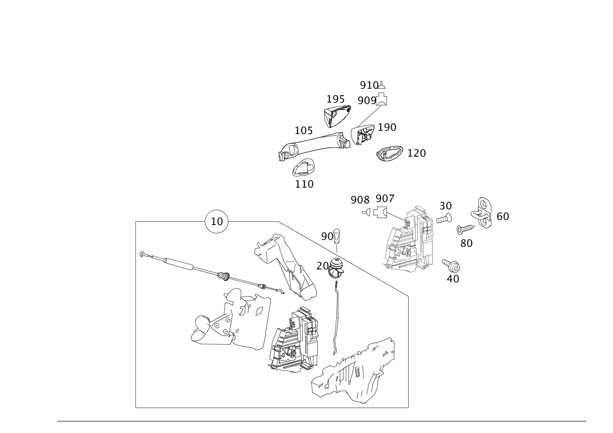

| № | Артикул | Название | Кол. | Примечание | Ограничение |
|---|---|---|---|---|---|
| 10 | A 169 720 17 35 | Замок двери | 1 | СЛЕВА Рулевое управление: Влево | |
| 10 | A 169 720 39 35 | Замок двери (TUERSCHLOSS) | 1 | СЛЕВА Рулевое управление: Влево | |
| 10 | A 169 720 23 35 | Замок двери (TUERSCHLOSS) | 1 | СЛЕВА Рулевое управление: Вправо | |
| 10 | A 169 720 45 35 | Замок двери (TUERSCHLOSS) | 1 | СЛЕВА Рулевое управление: Вправо [402] БОЛЬШЕ НЕ ПОСТАВЛЯЕТСЯ | |
| 10 | A 169 720 24 35 | Замок двери | 1 | СПРАВА Рулевое управление: Влево | |
| 10 | A 169 720 46 35 | Замок двери (TUERSCHLOSS) | 1 | СПРАВА Рулевое управление: Влево | |
| 10 | A 169 720 18 35 | Замок двери | 1 | СПРАВА Рулевое управление: Вправо | |
| 10 | A 169 720 40 35 | Замок двери (TUERSCHLOSS) | 1 | СПРАВА Рулевое управление: Вправо | |
| 20 | A 169 723 00 94 | - Гофрированный чехол (FALTENBALG) | 1 | СЛЕВА | |
| 20 | A 169 723 00 94 | - Гофрированный чехол (FALTENBALG) | 1 | СПРАВА | |
| 30 | A 140 984 30 29 | Винт Torx с полукр. гол. (LINSENKOPFSCHRAUBE M. ISR) | 2 | ЗАМОК К ВОДИТЕЛЬСКОЙ ДВЕРИ; M6X14 | |
| 30 | A 001 990 10 02 | Винт Torx потайной (SENKSCHRAUBE MIT ISR) | 2 | ЗАМОК К ВОДИТЕЛЬСКОЙ ДВЕРИ; M6X14 | |
| 30 | A 140 984 30 29 | Винт Torx с полукр. гол. (LINSENKOPFSCHRAUBE M. ISR) | 2 | ЗАМОК К ВОДИТЕЛЬСКОЙ ДВЕРИ; M6X14 | |
| 30 | A 001 990 10 02 | Винт Torx потайной (SENKSCHRAUBE MIT ISR) | 2 | ЗАМОК К ВОДИТЕЛЬСКОЙ ДВЕРИ; M6X14 | |
| 40 | N 000000 001474 | Винт с 6-гр. глвк (SECHSRUNDSCHRAUBE) | 1 | ЗАМОК ДВЕРИ НА ВНУТР. ПАНЕЛИ; M6X10 | |
| 40 | A 010 990 22 04 | Винт с внутр. звездочкой (FLACHKOPFSCHRAUBE MIT ISR) | 1 | ЗАМОК ДВЕРИ НА ВНУТР. ПАНЕЛИ; M6X10 | |
| 40 | N 000000 001474 | Винт с 6-гр. глвк (SECHSRUNDSCHRAUBE) | 1 | ЗАМОК ДВЕРИ НА ВНУТР. ПАНЕЛИ; M6X10 | |
| 40 | A 010 990 22 04 | Винт с внутр. звездочкой (FLACHKOPFSCHRAUBE MIT ISR) | 1 | ЗАМОК ДВЕРИ НА ВНУТР. ПАНЕЛИ; M6X10 | |
| 60 | A 169 720 00 04 | Скоба замка (SCHLIESSOESE) | 1 | ЗАМОК ДВЕРИ | |
| 60 | A 169 720 00 04 | Скоба замка (SCHLIESSOESE) | 1 | ЗАМОК ДВЕРИ | |
| 80 | A 140 984 04 29 | болт (SCHRAUBE) | 2 | ПЕТЛЯ; M8X25 | |
| 80 | A 140 984 04 29 | болт (SCHRAUBE) | 2 | ПЕТЛЯ; M8X25 | |
| 90 | A 123 766 00 22 | Стопорный штифт | 1 | БЛОКИРОВКА ДВЕРИ | |
| 90 | A 123 766 00 22 | Стопорный штифт | 1 | БЛОКИРОВКА ДВЕРИ | |
| 105 | A 169 766 01 01 | Ручка двери (TUERGRIFF) | 1 | СЛЕВА | 953 |
| 105 | A 169 766 02 01 | Ручка двери (TUERGRIFF) | 1 | СПРАВА | 953 |
| 105 | A 169 766 05 01 | Ручка двери | 1 | СЛЕВА | 954 |
| 105 | A 169 766 00 02 | Ручка двери | 1 | СПРАВА | 954 |
| 105 | A 169 760 01 70 | Ручка двери | 1 | СЛЕВА | 955 |
| 105 | A 169 760 02 70 | Ручка двери | 1 | СПРАВА | 955 |
| 105 | A 169 766 05 01 | Ручка двери | 1 | СЛЕВА | |
| 105 | A 169 766 00 02 | Ручка двери | 1 | СПРАВА | |
| 110 | A 169 766 01 05 | Подкладка (ZWISCHENLAGE) | 1 | СПЕРЕДИ СЛЕВА | |
| 110 | A 169 766 00 05 | Подкладка (ZWISCHENLAGE) | 1 | СПЕРЕДИ СПРАВА | |
| 120 | A 169 766 05 05 | Подкладка (ZWISCHENLAGE) | 1 | СЗАДИ СЛЕВА | |
| 120 | A 169 766 04 05 | Подкладка (ZWISCHENLAGE) | 1 | СЗАДИ СПРАВА | |
| 190 | A 169 760 15 77 | Направляющая (FUEHRUNG) | 1 | Со стороны водителя Рулевое управление: Влево [001466] ПРИ ЗАКАЗЕ ОБЯЗАТЕЛЬНО ПОЛНОСТЬЮ ЗАПОЛНИТЬ БЛАНК И АРХИВИРОВАТЬ."ЗАКАЗ ЗАПАСНОГО КЛЮЧА/ДЕТАЛЕЙ ЗАМКА" ПРИ ВОЗМОЖНЫХ ЗАПРОСАХ УГОЛОВНОЙ ПОЛИЦИИ В ЛЮБОЙ МОМЕНТ ВРЕМЕНИ СЛЕДУЕТ ПРЕДОСТАВИТЬ ПОДТВЕРЖДЕНИЕ. [407] ПРИ ЗАКАЗЕ УКАЗАТЬ НОМЕР КОМПЛЕКТА ЗАМКОВ [429] ДЕТАЛЬ, СВЯЗАННАЯ С ПРОТИВОУГОННОЙ БЕЗОПАСНОСТЬЮ | 583 |
| 190 | A 169 760 15 77 | Направляющая (FUEHRUNG) | 1 | Со стороны водителя Рулевое управление: Влево [001466] ПРИ ЗАКАЗЕ ОБЯЗАТЕЛЬНО ПОЛНОСТЬЮ ЗАПОЛНИТЬ БЛАНК И АРХИВИРОВАТЬ."ЗАКАЗ ЗАПАСНОГО КЛЮЧА/ДЕТАЛЕЙ ЗАМКА" ПРИ ВОЗМОЖНЫХ ЗАПРОСАХ УГОЛОВНОЙ ПОЛИЦИИ В ЛЮБОЙ МОМЕНТ ВРЕМЕНИ СЛЕДУЕТ ПРЕДОСТАВИТЬ ПОДТВЕРЖДЕНИЕ. [407] ПРИ ЗАКАЗЕ УКАЗАТЬ НОМЕР КОМПЛЕКТА ЗАМКОВ [429] ДЕТАЛЬ, СВЯЗАННАЯ С ПРОТИВОУГОННОЙ БЕЗОПАСНОСТЬЮ | |
| 190 | A 169 760 16 77 | Направляющая (FUEHRUNG) | 1 | Со стороны водителя Рулевое управление: Вправо [001466] ПРИ ЗАКАЗЕ ОБЯЗАТЕЛЬНО ПОЛНОСТЬЮ ЗАПОЛНИТЬ БЛАНК И АРХИВИРОВАТЬ."ЗАКАЗ ЗАПАСНОГО КЛЮЧА/ДЕТАЛЕЙ ЗАМКА" ПРИ ВОЗМОЖНЫХ ЗАПРОСАХ УГОЛОВНОЙ ПОЛИЦИИ В ЛЮБОЙ МОМЕНТ ВРЕМЕНИ СЛЕДУЕТ ПРЕДОСТАВИТЬ ПОДТВЕРЖДЕНИЕ. [407] ПРИ ЗАКАЗЕ УКАЗАТЬ НОМЕР КОМПЛЕКТА ЗАМКОВ [429] ДЕТАЛЬ, СВЯЗАННАЯ С ПРОТИВОУГОННОЙ БЕЗОПАСНОСТЬЮ | |
| 190 | A 169 760 32 77 | Направляющая (FUEHRUNG) | 1 | Со стороны водителя Рулевое управление: Вправо [001466] ПРИ ЗАКАЗЕ ОБЯЗАТЕЛЬНО ПОЛНОСТЬЮ ЗАПОЛНИТЬ БЛАНК И АРХИВИРОВАТЬ."ЗАКАЗ ЗАПАСНОГО КЛЮЧА/ДЕТАЛЕЙ ЗАМКА" ПРИ ВОЗМОЖНЫХ ЗАПРОСАХ УГОЛОВНОЙ ПОЛИЦИИ В ЛЮБОЙ МОМЕНТ ВРЕМЕНИ СЛЕДУЕТ ПРЕДОСТАВИТЬ ПОДТВЕРЖДЕНИЕ. [407] ПРИ ЗАКАЗЕ УКАЗАТЬ НОМЕР КОМПЛЕКТА ЗАМКОВ [429] ДЕТАЛЬ, СВЯЗАННАЯ С ПРОТИВОУГОННОЙ БЕЗОПАСНОСТЬЮ | 885 |
| 190 | A 169 760 07 77 | Направляющая (FUEHRUNG) | 1 | СТОРОНА ПЕРЕДНЕГО ПАССАЖИРА Рулевое управление: Вправо [402] БОЛЬШЕ НЕ ПОСТАВЛЯЕТСЯ | 953 |
| 190 | A 169 760 08 77 | Направляющая (FUEHRUNG) | 1 | СТОРОНА ПЕРЕДНЕГО ПАССАЖИРА Рулевое управление: Влево | 953 |
| 190 | A 169 760 11 77 | Направляющая | 1 | СТОРОНА ПЕРЕДНЕГО ПАССАЖИРА Рулевое управление: Вправо | 954 |
| 190 | A 169 760 12 77 | Направляющая | 1 | СТОРОНА ПЕРЕДНЕГО ПАССАЖИРА Рулевое управление: Влево | 954 |
| 190 | A 169 760 09 77 | Направляющая | 1 | СТОРОНА ПЕРЕДНЕГО ПАССАЖИРА Рулевое управление: Вправо | 955 |
| 190 | A 169 760 10 77 | Направляющая | 1 | СТОРОНА ПЕРЕДНЕГО ПАССАЖИРА Рулевое управление: Влево | 955 |
| 190 | A 169 760 11 77 | Направляющая | 1 | СТОРОНА ПЕРЕДНЕГО ПАССАЖИРА Рулевое управление: Вправо | |
| 190 | A 169 760 12 77 | Направляющая | 1 | СТОРОНА ПЕРЕДНЕГО ПАССАЖИРА Рулевое управление: Влево | |
| 195 | A 169 766 00 35 | Колпачок (KAPPE) | 1 | Со стороны водителя Рулевое управление: Влево | 953 |
| 195 | A 169 766 03 35 | Колпачок | 1 | Со стороны водителя Рулевое управление: Влево | 954 |
| 195 | A 169 760 01 18 | Колпачок | 1 | Со стороны водителя Рулевое управление: Влево | 955 |
| 195 | A 169 766 05 35 | Колпачок (KAPPE) | 1 | Со стороны водителя Рулевое управление: Влево | 583+953 |
| 195 | A 169 766 07 35 | Колпачок | 1 | Со стороны водителя Рулевое управление: Влево | 583+954 |
| 195 | A 169 766 07 35 | Колпачок | 1 | Со стороны водителя Рулевое управление: Влево | |
| 195 | A 169 766 02 35 | Колпачок (KAPPE) | 1 | Со стороны водителя Рулевое управление: Вправо [402] БОЛЬШЕ НЕ ПОСТАВЛЯЕТСЯ | 953 |
| 195 | A 169 766 04 35 | Колпачок | 1 | Со стороны водителя Рулевое управление: Вправо | 954 |
| 195 | A 169 760 02 18 | Колпачок | 1 | Со стороны водителя Рулевое управление: Вправо | 955 |
| 195 | A 169 766 06 35 | Колпачок (KAPPE) | 1 | Со стороны водителя Рулевое управление: Вправо | 583+953 |
| 195 | A 169 766 08 35 | Колпачок | 1 | Со стороны водителя Рулевое управление: Вправо | 583+954 |
| 195 | A 169 766 08 35 | Колпачок | 1 | Со стороны водителя Рулевое управление: Вправо | |
| 400 | A 169 766 17 06 | Ключ | 2 | ЭЛЕКТРОНН., НЕ ПРОГРАММИРУЕТСЯ ES2: 9999 [001466] ПРИ ЗАКАЗЕ ОБЯЗАТЕЛЬНО ПОЛНОСТЬЮ ЗАПОЛНИТЬ БЛАНК И АРХИВИРОВАТЬ."ЗАКАЗ ЗАПАСНОГО КЛЮЧА/ДЕТАЛЕЙ ЗАМКА" ПРИ ВОЗМОЖНЫХ ЗАПРОСАХ УГОЛОВНОЙ ПОЛИЦИИ В ЛЮБОЙ МОМЕНТ ВРЕМЕНИ СЛЕДУЕТ ПРЕДОСТАВИТЬ ПОДТВЕРЖДЕНИЕ. [429] ДЕТАЛЬ, СВЯЗАННАЯ С ПРОТИВОУГОННОЙ БЕЗОПАСНОСТЬЮ | (805/806/807/808/809/800)+-099 |
| 400 | A 169 905 06 39 | Ключ | 2 | ЭЛЕКТРОНН., НЕ ПРОГРАММИРУЕТСЯ ES2: 9999 [429] ДЕТАЛЬ, СВЯЗАННАЯ С ПРОТИВОУГОННОЙ БЕЗОПАСНОСТЬЮ [001466] ПРИ ЗАКАЗЕ ОБЯЗАТЕЛЬНО ПОЛНОСТЬЮ ЗАПОЛНИТЬ БЛАНК И АРХИВИРОВАТЬ."ЗАКАЗ ЗАПАСНОГО КЛЮЧА/ДЕТАЛЕЙ ЗАМКА" ПРИ ВОЗМОЖНЫХ ЗАПРОСАХ УГОЛОВНОЙ ПОЛИЦИИ В ЛЮБОЙ МОМЕНТ ВРЕМЕНИ СЛЕДУЕТ ПРЕДОСТАВИТЬ ПОДТВЕРЖДЕНИЕ. | (805/806/807/808/809/800)+-099 |
| 400 | A 169 905 24 00 | Ключ | 2 | ЭЛЕКТРОНН., НЕ ПРОГРАММИРУЕТСЯ ES2: 9999 [429] ДЕТАЛЬ, СВЯЗАННАЯ С ПРОТИВОУГОННОЙ БЕЗОПАСНОСТЬЮ [001466] ПРИ ЗАКАЗЕ ОБЯЗАТЕЛЬНО ПОЛНОСТЬЮ ЗАПОЛНИТЬ БЛАНК И АРХИВИРОВАТЬ."ЗАКАЗ ЗАПАСНОГО КЛЮЧА/ДЕТАЛЕЙ ЗАМКА" ПРИ ВОЗМОЖНЫХ ЗАПРОСАХ УГОЛОВНОЙ ПОЛИЦИИ В ЛЮБОЙ МОМЕНТ ВРЕМЕНИ СЛЕДУЕТ ПРЕДОСТАВИТЬ ПОДТВЕРЖДЕНИЕ. | (805/806/807/808/809/800)+-099 |
| 400 | A 906 905 89 00 | Ключ | 2 | ЭЛЕКТРОНН., НЕ ПРОГРАММИРУЕТСЯ ES2: 9999 [429] ДЕТАЛЬ, СВЯЗАННАЯ С ПРОТИВОУГОННОЙ БЕЗОПАСНОСТЬЮ [001466] ПРИ ЗАКАЗЕ ОБЯЗАТЕЛЬНО ПОЛНОСТЬЮ ЗАПОЛНИТЬ БЛАНК И АРХИВИРОВАТЬ."ЗАКАЗ ЗАПАСНОГО КЛЮЧА/ДЕТАЛЕЙ ЗАМКА" ПРИ ВОЗМОЖНЫХ ЗАПРОСАХ УГОЛОВНОЙ ПОЛИЦИИ В ЛЮБОЙ МОМЕНТ ВРЕМЕНИ СЛЕДУЕТ ПРЕДОСТАВИТЬ ПОДТВЕРЖДЕНИЕ. | (805/806/807/808/809/800)+-099 |
| 400 | A 169 766 17 06 | Ключ | 2 | ЭЛЕКТРОНН., ПРОГРАММИРУЕТСЯ [001235] ВНИМАНИЕ ! ПРИ ЗАКАЗЕ ЗАП. КЛЮЧА ES-2: УКАЗАТЬ 0041. [001236] ВНИМАНИЕ ! ПРИ ЗАКАЗЕ ЗАП. КЛЮЧА СЛЕДУЕТ УКАЗАТЬ ES-2 СЧИТАТЬ ДАННЫЕ ИЗ А/М [001466] ПРИ ЗАКАЗЕ ОБЯЗАТЕЛЬНО ПОЛНОСТЬЮ ЗАПОЛНИТЬ БЛАНК И АРХИВИРОВАТЬ."ЗАКАЗ ЗАПАСНОГО КЛЮЧА/ДЕТАЛЕЙ ЗАМКА" ПРИ ВОЗМОЖНЫХ ЗАПРОСАХ УГОЛОВНОЙ ПОЛИЦИИ В ЛЮБОЙ МОМЕНТ ВРЕМЕНИ СЛЕДУЕТ ПРЕДОСТАВИТЬ ПОДТВЕРЖДЕНИЕ. [429] ДЕТАЛЬ, СВЯЗАННАЯ С ПРОТИВОУГОННОЙ БЕЗОПАСНОСТЬЮ | (805/806/807/808/809/800)+-099 |
| 400 | A 169 905 06 39 | Ключ | 2 | ЭЛЕКТРОНН., ПРОГРАММИРУЕТСЯ [429] ДЕТАЛЬ, СВЯЗАННАЯ С ПРОТИВОУГОННОЙ БЕЗОПАСНОСТЬЮ [001235] ВНИМАНИЕ ! ПРИ ЗАКАЗЕ ЗАП. КЛЮЧА ES-2: УКАЗАТЬ 0041. [001236] ВНИМАНИЕ ! ПРИ ЗАКАЗЕ ЗАП. КЛЮЧА СЛЕДУЕТ УКАЗАТЬ ES-2 СЧИТАТЬ ДАННЫЕ ИЗ А/М [001466] ПРИ ЗАКАЗЕ ОБЯЗАТЕЛЬНО ПОЛНОСТЬЮ ЗАПОЛНИТЬ БЛАНК И АРХИВИРОВАТЬ."ЗАКАЗ ЗАПАСНОГО КЛЮЧА/ДЕТАЛЕЙ ЗАМКА" ПРИ ВОЗМОЖНЫХ ЗАПРОСАХ УГОЛОВНОЙ ПОЛИЦИИ В ЛЮБОЙ МОМЕНТ ВРЕМЕНИ СЛЕДУЕТ ПРЕДОСТАВИТЬ ПОДТВЕРЖДЕНИЕ. | (805/806/807/808/809/800)+-099 |
| 400 | A 169 905 24 00 | Ключ | 2 | ЭЛЕКТРОНН., ПРОГРАММИРУЕТСЯ [429] ДЕТАЛЬ, СВЯЗАННАЯ С ПРОТИВОУГОННОЙ БЕЗОПАСНОСТЬЮ [001235] ВНИМАНИЕ ! ПРИ ЗАКАЗЕ ЗАП. КЛЮЧА ES-2: УКАЗАТЬ 0041. [001236] ВНИМАНИЕ ! ПРИ ЗАКАЗЕ ЗАП. КЛЮЧА СЛЕДУЕТ УКАЗАТЬ ES-2 СЧИТАТЬ ДАННЫЕ ИЗ А/М [001466] ПРИ ЗАКАЗЕ ОБЯЗАТЕЛЬНО ПОЛНОСТЬЮ ЗАПОЛНИТЬ БЛАНК И АРХИВИРОВАТЬ."ЗАКАЗ ЗАПАСНОГО КЛЮЧА/ДЕТАЛЕЙ ЗАМКА" ПРИ ВОЗМОЖНЫХ ЗАПРОСАХ УГОЛОВНОЙ ПОЛИЦИИ В ЛЮБОЙ МОМЕНТ ВРЕМЕНИ СЛЕДУЕТ ПРЕДОСТАВИТЬ ПОДТВЕРЖДЕНИЕ. | (805/806/807/808/809/800)+-099 |
| 400 | A 906 905 89 00 | Ключ | 2 | ЭЛЕКТРОНН., ПРОГРАММИРУЕТСЯ [429] ДЕТАЛЬ, СВЯЗАННАЯ С ПРОТИВОУГОННОЙ БЕЗОПАСНОСТЬЮ [001235] ВНИМАНИЕ ! ПРИ ЗАКАЗЕ ЗАП. КЛЮЧА ES-2: УКАЗАТЬ 0041. [001236] ВНИМАНИЕ ! ПРИ ЗАКАЗЕ ЗАП. КЛЮЧА СЛЕДУЕТ УКАЗАТЬ ES-2 СЧИТАТЬ ДАННЫЕ ИЗ А/М [001466] ПРИ ЗАКАЗЕ ОБЯЗАТЕЛЬНО ПОЛНОСТЬЮ ЗАПОЛНИТЬ БЛАНК И АРХИВИРОВАТЬ."ЗАКАЗ ЗАПАСНОГО КЛЮЧА/ДЕТАЛЕЙ ЗАМКА" ПРИ ВОЗМОЖНЫХ ЗАПРОСАХ УГОЛОВНОЙ ПОЛИЦИИ В ЛЮБОЙ МОМЕНТ ВРЕМЕНИ СЛЕДУЕТ ПРЕДОСТАВИТЬ ПОДТВЕРЖДЕНИЕ. | (805/806/807/808/809/800)+-099 |
| 400 | A 169 905 06 39 | Ключ | 2 | ЭЛЕКТРОНН., НЕ ПРОГРАММИРУЕТСЯ ES2: 9999 [429] ДЕТАЛЬ, СВЯЗАННАЯ С ПРОТИВОУГОННОЙ БЕЗОПАСНОСТЬЮ [001466] ПРИ ЗАКАЗЕ ОБЯЗАТЕЛЬНО ПОЛНОСТЬЮ ЗАПОЛНИТЬ БЛАНК И АРХИВИРОВАТЬ."ЗАКАЗ ЗАПАСНОГО КЛЮЧА/ДЕТАЛЕЙ ЗАМКА" ПРИ ВОЗМОЖНЫХ ЗАПРОСАХ УГОЛОВНОЙ ПОЛИЦИИ В ЛЮБОЙ МОМЕНТ ВРЕМЕНИ СЛЕДУЕТ ПРЕДОСТАВИТЬ ПОДТВЕРЖДЕНИЕ. | (805/806/807/808/809/800)+099 |
| 400 | A 169 905 24 00 | Ключ | 2 | ЭЛЕКТРОНН., НЕ ПРОГРАММИРУЕТСЯ ES2: 9999 [429] ДЕТАЛЬ, СВЯЗАННАЯ С ПРОТИВОУГОННОЙ БЕЗОПАСНОСТЬЮ [001466] ПРИ ЗАКАЗЕ ОБЯЗАТЕЛЬНО ПОЛНОСТЬЮ ЗАПОЛНИТЬ БЛАНК И АРХИВИРОВАТЬ."ЗАКАЗ ЗАПАСНОГО КЛЮЧА/ДЕТАЛЕЙ ЗАМКА" ПРИ ВОЗМОЖНЫХ ЗАПРОСАХ УГОЛОВНОЙ ПОЛИЦИИ В ЛЮБОЙ МОМЕНТ ВРЕМЕНИ СЛЕДУЕТ ПРЕДОСТАВИТЬ ПОДТВЕРЖДЕНИЕ. | (805/806/807/808/809/800)+099 |
| 400 | A 906 905 89 00 | Ключ | 2 | ЭЛЕКТРОНН., НЕ ПРОГРАММИРУЕТСЯ ES2: 9999 [429] ДЕТАЛЬ, СВЯЗАННАЯ С ПРОТИВОУГОННОЙ БЕЗОПАСНОСТЬЮ [001466] ПРИ ЗАКАЗЕ ОБЯЗАТЕЛЬНО ПОЛНОСТЬЮ ЗАПОЛНИТЬ БЛАНК И АРХИВИРОВАТЬ."ЗАКАЗ ЗАПАСНОГО КЛЮЧА/ДЕТАЛЕЙ ЗАМКА" ПРИ ВОЗМОЖНЫХ ЗАПРОСАХ УГОЛОВНОЙ ПОЛИЦИИ В ЛЮБОЙ МОМЕНТ ВРЕМЕНИ СЛЕДУЕТ ПРЕДОСТАВИТЬ ПОДТВЕРЖДЕНИЕ. | (805/806/807/808/809/800)+099 |
| 400 | A 169 905 06 39 | Ключ | 2 | ЭЛЕКТРОНН., ПРОГРАММИРУЕТСЯ [429] ДЕТАЛЬ, СВЯЗАННАЯ С ПРОТИВОУГОННОЙ БЕЗОПАСНОСТЬЮ [001235] ВНИМАНИЕ ! ПРИ ЗАКАЗЕ ЗАП. КЛЮЧА ES-2: УКАЗАТЬ 0041. [001236] ВНИМАНИЕ ! ПРИ ЗАКАЗЕ ЗАП. КЛЮЧА СЛЕДУЕТ УКАЗАТЬ ES-2 СЧИТАТЬ ДАННЫЕ ИЗ А/М [001466] ПРИ ЗАКАЗЕ ОБЯЗАТЕЛЬНО ПОЛНОСТЬЮ ЗАПОЛНИТЬ БЛАНК И АРХИВИРОВАТЬ."ЗАКАЗ ЗАПАСНОГО КЛЮЧА/ДЕТАЛЕЙ ЗАМКА" ПРИ ВОЗМОЖНЫХ ЗАПРОСАХ УГОЛОВНОЙ ПОЛИЦИИ В ЛЮБОЙ МОМЕНТ ВРЕМЕНИ СЛЕДУЕТ ПРЕДОСТАВИТЬ ПОДТВЕРЖДЕНИЕ. | (805/806/807/808/809/800)+099 |
| 400 | A 169 905 24 00 | Ключ | 2 | ЭЛЕКТРОНН., ПРОГРАММИРУЕТСЯ [429] ДЕТАЛЬ, СВЯЗАННАЯ С ПРОТИВОУГОННОЙ БЕЗОПАСНОСТЬЮ [001235] ВНИМАНИЕ ! ПРИ ЗАКАЗЕ ЗАП. КЛЮЧА ES-2: УКАЗАТЬ 0041. [001236] ВНИМАНИЕ ! ПРИ ЗАКАЗЕ ЗАП. КЛЮЧА СЛЕДУЕТ УКАЗАТЬ ES-2 СЧИТАТЬ ДАННЫЕ ИЗ А/М [001466] ПРИ ЗАКАЗЕ ОБЯЗАТЕЛЬНО ПОЛНОСТЬЮ ЗАПОЛНИТЬ БЛАНК И АРХИВИРОВАТЬ."ЗАКАЗ ЗАПАСНОГО КЛЮЧА/ДЕТАЛЕЙ ЗАМКА" ПРИ ВОЗМОЖНЫХ ЗАПРОСАХ УГОЛОВНОЙ ПОЛИЦИИ В ЛЮБОЙ МОМЕНТ ВРЕМЕНИ СЛЕДУЕТ ПРЕДОСТАВИТЬ ПОДТВЕРЖДЕНИЕ. | (805/806/807/808/809/800)+099 |
| 400 | A 906 905 89 00 | Ключ | 2 | ЭЛЕКТРОНН., ПРОГРАММИРУЕТСЯ [429] ДЕТАЛЬ, СВЯЗАННАЯ С ПРОТИВОУГОННОЙ БЕЗОПАСНОСТЬЮ [001235] ВНИМАНИЕ ! ПРИ ЗАКАЗЕ ЗАП. КЛЮЧА ES-2: УКАЗАТЬ 0041. [001236] ВНИМАНИЕ ! ПРИ ЗАКАЗЕ ЗАП. КЛЮЧА СЛЕДУЕТ УКАЗАТЬ ES-2 СЧИТАТЬ ДАННЫЕ ИЗ А/М [001466] ПРИ ЗАКАЗЕ ОБЯЗАТЕЛЬНО ПОЛНОСТЬЮ ЗАПОЛНИТЬ БЛАНК И АРХИВИРОВАТЬ."ЗАКАЗ ЗАПАСНОГО КЛЮЧА/ДЕТАЛЕЙ ЗАМКА" ПРИ ВОЗМОЖНЫХ ЗАПРОСАХ УГОЛОВНОЙ ПОЛИЦИИ В ЛЮБОЙ МОМЕНТ ВРЕМЕНИ СЛЕДУЕТ ПРЕДОСТАВИТЬ ПОДТВЕРЖДЕНИЕ. | (805/806/807/808/809/800)+099 |
| 400 | A 169 905 06 39 | Ключ | 2 | ЭЛЕКТРОНН., НЕ ПРОГРАММИРУЕТСЯ ES2: 9999 [429] ДЕТАЛЬ, СВЯЗАННАЯ С ПРОТИВОУГОННОЙ БЕЗОПАСНОСТЬЮ [001466] ПРИ ЗАКАЗЕ ОБЯЗАТЕЛЬНО ПОЛНОСТЬЮ ЗАПОЛНИТЬ БЛАНК И АРХИВИРОВАТЬ."ЗАКАЗ ЗАПАСНОГО КЛЮЧА/ДЕТАЛЕЙ ЗАМКА" ПРИ ВОЗМОЖНЫХ ЗАПРОСАХ УГОЛОВНОЙ ПОЛИЦИИ В ЛЮБОЙ МОМЕНТ ВРЕМЕНИ СЛЕДУЕТ ПРЕДОСТАВИТЬ ПОДТВЕРЖДЕНИЕ. | 801/802 |
| 400 | A 169 905 24 00 | Ключ | 2 | ЭЛЕКТРОНН., НЕ ПРОГРАММИРУЕТСЯ ES2: 9999 [429] ДЕТАЛЬ, СВЯЗАННАЯ С ПРОТИВОУГОННОЙ БЕЗОПАСНОСТЬЮ [001466] ПРИ ЗАКАЗЕ ОБЯЗАТЕЛЬНО ПОЛНОСТЬЮ ЗАПОЛНИТЬ БЛАНК И АРХИВИРОВАТЬ."ЗАКАЗ ЗАПАСНОГО КЛЮЧА/ДЕТАЛЕЙ ЗАМКА" ПРИ ВОЗМОЖНЫХ ЗАПРОСАХ УГОЛОВНОЙ ПОЛИЦИИ В ЛЮБОЙ МОМЕНТ ВРЕМЕНИ СЛЕДУЕТ ПРЕДОСТАВИТЬ ПОДТВЕРЖДЕНИЕ. | 801/802 |
| 400 | A 906 905 89 00 | Ключ | 2 | ЭЛЕКТРОНН., НЕ ПРОГРАММИРУЕТСЯ ES2: 9999 [429] ДЕТАЛЬ, СВЯЗАННАЯ С ПРОТИВОУГОННОЙ БЕЗОПАСНОСТЬЮ [001466] ПРИ ЗАКАЗЕ ОБЯЗАТЕЛЬНО ПОЛНОСТЬЮ ЗАПОЛНИТЬ БЛАНК И АРХИВИРОВАТЬ."ЗАКАЗ ЗАПАСНОГО КЛЮЧА/ДЕТАЛЕЙ ЗАМКА" ПРИ ВОЗМОЖНЫХ ЗАПРОСАХ УГОЛОВНОЙ ПОЛИЦИИ В ЛЮБОЙ МОМЕНТ ВРЕМЕНИ СЛЕДУЕТ ПРЕДОСТАВИТЬ ПОДТВЕРЖДЕНИЕ. | 801/802 |
| 400 | A 169 905 06 39 | Ключ | 2 | ЭЛЕКТРОНН., ПРОГРАММИРУЕТСЯ [429] ДЕТАЛЬ, СВЯЗАННАЯ С ПРОТИВОУГОННОЙ БЕЗОПАСНОСТЬЮ [001235] ВНИМАНИЕ ! ПРИ ЗАКАЗЕ ЗАП. КЛЮЧА ES-2: УКАЗАТЬ 0041. [001236] ВНИМАНИЕ ! ПРИ ЗАКАЗЕ ЗАП. КЛЮЧА СЛЕДУЕТ УКАЗАТЬ ES-2 СЧИТАТЬ ДАННЫЕ ИЗ А/М [001466] ПРИ ЗАКАЗЕ ОБЯЗАТЕЛЬНО ПОЛНОСТЬЮ ЗАПОЛНИТЬ БЛАНК И АРХИВИРОВАТЬ."ЗАКАЗ ЗАПАСНОГО КЛЮЧА/ДЕТАЛЕЙ ЗАМКА" ПРИ ВОЗМОЖНЫХ ЗАПРОСАХ УГОЛОВНОЙ ПОЛИЦИИ В ЛЮБОЙ МОМЕНТ ВРЕМЕНИ СЛЕДУЕТ ПРЕДОСТАВИТЬ ПОДТВЕРЖДЕНИЕ. | 801/802 |
| 400 | A 169 905 24 00 | Ключ | 2 | ЭЛЕКТРОНН., ПРОГРАММИРУЕТСЯ [429] ДЕТАЛЬ, СВЯЗАННАЯ С ПРОТИВОУГОННОЙ БЕЗОПАСНОСТЬЮ [001235] ВНИМАНИЕ ! ПРИ ЗАКАЗЕ ЗАП. КЛЮЧА ES-2: УКАЗАТЬ 0041. [001236] ВНИМАНИЕ ! ПРИ ЗАКАЗЕ ЗАП. КЛЮЧА СЛЕДУЕТ УКАЗАТЬ ES-2 СЧИТАТЬ ДАННЫЕ ИЗ А/М [001466] ПРИ ЗАКАЗЕ ОБЯЗАТЕЛЬНО ПОЛНОСТЬЮ ЗАПОЛНИТЬ БЛАНК И АРХИВИРОВАТЬ."ЗАКАЗ ЗАПАСНОГО КЛЮЧА/ДЕТАЛЕЙ ЗАМКА" ПРИ ВОЗМОЖНЫХ ЗАПРОСАХ УГОЛОВНОЙ ПОЛИЦИИ В ЛЮБОЙ МОМЕНТ ВРЕМЕНИ СЛЕДУЕТ ПРЕДОСТАВИТЬ ПОДТВЕРЖДЕНИЕ. | 801/802 |
| 400 | A 906 905 89 00 | Ключ | 2 | ЭЛЕКТРОНН., ПРОГРАММИРУЕТСЯ [429] ДЕТАЛЬ, СВЯЗАННАЯ С ПРОТИВОУГОННОЙ БЕЗОПАСНОСТЬЮ [001235] ВНИМАНИЕ ! ПРИ ЗАКАЗЕ ЗАП. КЛЮЧА ES-2: УКАЗАТЬ 0041. [001236] ВНИМАНИЕ ! ПРИ ЗАКАЗЕ ЗАП. КЛЮЧА СЛЕДУЕТ УКАЗАТЬ ES-2 СЧИТАТЬ ДАННЫЕ ИЗ А/М [001466] ПРИ ЗАКАЗЕ ОБЯЗАТЕЛЬНО ПОЛНОСТЬЮ ЗАПОЛНИТЬ БЛАНК И АРХИВИРОВАТЬ."ЗАКАЗ ЗАПАСНОГО КЛЮЧА/ДЕТАЛЕЙ ЗАМКА" ПРИ ВОЗМОЖНЫХ ЗАПРОСАХ УГОЛОВНОЙ ПОЛИЦИИ В ЛЮБОЙ МОМЕНТ ВРЕМЕНИ СЛЕДУЕТ ПРЕДОСТАВИТЬ ПОДТВЕРЖДЕНИЕ. | 801/802 |
| 400 | A 203 766 45 06 | Ключ | 2 | ЭЛЕКТРОНН., НЕ ПРОГРАММИРУЕТСЯ ES2: 9999 [429] ДЕТАЛЬ, СВЯЗАННАЯ С ПРОТИВОУГОННОЙ БЕЗОПАСНОСТЬЮ [001466] ПРИ ЗАКАЗЕ ОБЯЗАТЕЛЬНО ПОЛНОСТЬЮ ЗАПОЛНИТЬ БЛАНК И АРХИВИРОВАТЬ."ЗАКАЗ ЗАПАСНОГО КЛЮЧА/ДЕТАЛЕЙ ЗАМКА" ПРИ ВОЗМОЖНЫХ ЗАПРОСАХ УГОЛОВНОЙ ПОЛИЦИИ В ЛЮБОЙ МОМЕНТ ВРЕМЕНИ СЛЕДУЕТ ПРЕДОСТАВИТЬ ПОДТВЕРЖДЕНИЕ. | (805/806/807/808/809/800)+(763/494/460+494+551)+-099 |
| 400 | A 169 766 34 06 | Ключ | 2 | ЭЛЕКТРОНН., НЕ ПРОГРАММИРУЕТСЯ ES2: 9999 [429] ДЕТАЛЬ, СВЯЗАННАЯ С ПРОТИВОУГОННОЙ БЕЗОПАСНОСТЬЮ [001466] ПРИ ЗАКАЗЕ ОБЯЗАТЕЛЬНО ПОЛНОСТЬЮ ЗАПОЛНИТЬ БЛАНК И АРХИВИРОВАТЬ."ЗАКАЗ ЗАПАСНОГО КЛЮЧА/ДЕТАЛЕЙ ЗАМКА" ПРИ ВОЗМОЖНЫХ ЗАПРОСАХ УГОЛОВНОЙ ПОЛИЦИИ В ЛЮБОЙ МОМЕНТ ВРЕМЕНИ СЛЕДУЕТ ПРЕДОСТАВИТЬ ПОДТВЕРЖДЕНИЕ. | (805/806/807/808/809/800)+(763/494/460+494+551)+-099 |
| 400 | A 203 766 45 06 | Ключ | 2 | ЭЛЕКТРОНН., ПРОГРАММИРУЕТСЯ [429] ДЕТАЛЬ, СВЯЗАННАЯ С ПРОТИВОУГОННОЙ БЕЗОПАСНОСТЬЮ [001235] ВНИМАНИЕ ! ПРИ ЗАКАЗЕ ЗАП. КЛЮЧА ES-2: УКАЗАТЬ 0041. [001236] ВНИМАНИЕ ! ПРИ ЗАКАЗЕ ЗАП. КЛЮЧА СЛЕДУЕТ УКАЗАТЬ ES-2 СЧИТАТЬ ДАННЫЕ ИЗ А/М [001466] ПРИ ЗАКАЗЕ ОБЯЗАТЕЛЬНО ПОЛНОСТЬЮ ЗАПОЛНИТЬ БЛАНК И АРХИВИРОВАТЬ."ЗАКАЗ ЗАПАСНОГО КЛЮЧА/ДЕТАЛЕЙ ЗАМКА" ПРИ ВОЗМОЖНЫХ ЗАПРОСАХ УГОЛОВНОЙ ПОЛИЦИИ В ЛЮБОЙ МОМЕНТ ВРЕМЕНИ СЛЕДУЕТ ПРЕДОСТАВИТЬ ПОДТВЕРЖДЕНИЕ. | (805/806/807/808/809/800)+(763/494/460+494+551)+-099 |
| 400 | A 169 766 34 06 | Ключ | 2 | ЭЛЕКТРОНН., ПРОГРАММИРУЕТСЯ [429] ДЕТАЛЬ, СВЯЗАННАЯ С ПРОТИВОУГОННОЙ БЕЗОПАСНОСТЬЮ [001235] ВНИМАНИЕ ! ПРИ ЗАКАЗЕ ЗАП. КЛЮЧА ES-2: УКАЗАТЬ 0041. [001236] ВНИМАНИЕ ! ПРИ ЗАКАЗЕ ЗАП. КЛЮЧА СЛЕДУЕТ УКАЗАТЬ ES-2 СЧИТАТЬ ДАННЫЕ ИЗ А/М [001466] ПРИ ЗАКАЗЕ ОБЯЗАТЕЛЬНО ПОЛНОСТЬЮ ЗАПОЛНИТЬ БЛАНК И АРХИВИРОВАТЬ."ЗАКАЗ ЗАПАСНОГО КЛЮЧА/ДЕТАЛЕЙ ЗАМКА" ПРИ ВОЗМОЖНЫХ ЗАПРОСАХ УГОЛОВНОЙ ПОЛИЦИИ В ЛЮБОЙ МОМЕНТ ВРЕМЕНИ СЛЕДУЕТ ПРЕДОСТАВИТЬ ПОДТВЕРЖДЕНИЕ. | (805/806/807/808/809/800)+(763/494/460+494+551)+-099 |
| 400 | A 169 766 34 06 | Ключ | 2 | ЭЛЕКТРОНН., НЕ ПРОГРАММИРУЕТСЯ ES2: 9999 [429] ДЕТАЛЬ, СВЯЗАННАЯ С ПРОТИВОУГОННОЙ БЕЗОПАСНОСТЬЮ [001466] ПРИ ЗАКАЗЕ ОБЯЗАТЕЛЬНО ПОЛНОСТЬЮ ЗАПОЛНИТЬ БЛАНК И АРХИВИРОВАТЬ."ЗАКАЗ ЗАПАСНОГО КЛЮЧА/ДЕТАЛЕЙ ЗАМКА" ПРИ ВОЗМОЖНЫХ ЗАПРОСАХ УГОЛОВНОЙ ПОЛИЦИИ В ЛЮБОЙ МОМЕНТ ВРЕМЕНИ СЛЕДУЕТ ПРЕДОСТАВИТЬ ПОДТВЕРЖДЕНИЕ. | (805/806/807/808/809/800)+(763/494/460+494+551)+099 |
| 400 | A 169 766 34 06 | Ключ | 2 | ЭЛЕКТРОНН., ПРОГРАММИРУЕТСЯ [429] ДЕТАЛЬ, СВЯЗАННАЯ С ПРОТИВОУГОННОЙ БЕЗОПАСНОСТЬЮ [001235] ВНИМАНИЕ ! ПРИ ЗАКАЗЕ ЗАП. КЛЮЧА ES-2: УКАЗАТЬ 0041. [001236] ВНИМАНИЕ ! ПРИ ЗАКАЗЕ ЗАП. КЛЮЧА СЛЕДУЕТ УКАЗАТЬ ES-2 СЧИТАТЬ ДАННЫЕ ИЗ А/М [001466] ПРИ ЗАКАЗЕ ОБЯЗАТЕЛЬНО ПОЛНОСТЬЮ ЗАПОЛНИТЬ БЛАНК И АРХИВИРОВАТЬ."ЗАКАЗ ЗАПАСНОГО КЛЮЧА/ДЕТАЛЕЙ ЗАМКА" ПРИ ВОЗМОЖНЫХ ЗАПРОСАХ УГОЛОВНОЙ ПОЛИЦИИ В ЛЮБОЙ МОМЕНТ ВРЕМЕНИ СЛЕДУЕТ ПРЕДОСТАВИТЬ ПОДТВЕРЖДЕНИЕ. | (805/806/807/808/809/800)+(763/494/460+494+551)+099 |
| 400 | A 169 766 34 06 | Ключ | 2 | ЭЛЕКТРОНН., НЕ ПРОГРАММИРУЕТСЯ ES2: 9999 [429] ДЕТАЛЬ, СВЯЗАННАЯ С ПРОТИВОУГОННОЙ БЕЗОПАСНОСТЬЮ [001466] ПРИ ЗАКАЗЕ ОБЯЗАТЕЛЬНО ПОЛНОСТЬЮ ЗАПОЛНИТЬ БЛАНК И АРХИВИРОВАТЬ."ЗАКАЗ ЗАПАСНОГО КЛЮЧА/ДЕТАЛЕЙ ЗАМКА" ПРИ ВОЗМОЖНЫХ ЗАПРОСАХ УГОЛОВНОЙ ПОЛИЦИИ В ЛЮБОЙ МОМЕНТ ВРЕМЕНИ СЛЕДУЕТ ПРЕДОСТАВИТЬ ПОДТВЕРЖДЕНИЕ. | (801/802)+(763/494/460+494+551) |
| 400 | A 169 766 34 06 | Ключ | 2 | ЭЛЕКТРОНН., ПРОГРАММИРУЕТСЯ [429] ДЕТАЛЬ, СВЯЗАННАЯ С ПРОТИВОУГОННОЙ БЕЗОПАСНОСТЬЮ [001235] ВНИМАНИЕ ! ПРИ ЗАКАЗЕ ЗАП. КЛЮЧА ES-2: УКАЗАТЬ 0041. [001236] ВНИМАНИЕ ! ПРИ ЗАКАЗЕ ЗАП. КЛЮЧА СЛЕДУЕТ УКАЗАТЬ ES-2 СЧИТАТЬ ДАННЫЕ ИЗ А/М [001466] ПРИ ЗАКАЗЕ ОБЯЗАТЕЛЬНО ПОЛНОСТЬЮ ЗАПОЛНИТЬ БЛАНК И АРХИВИРОВАТЬ."ЗАКАЗ ЗАПАСНОГО КЛЮЧА/ДЕТАЛЕЙ ЗАМКА" ПРИ ВОЗМОЖНЫХ ЗАПРОСАХ УГОЛОВНОЙ ПОЛИЦИИ В ЛЮБОЙ МОМЕНТ ВРЕМЕНИ СЛЕДУЕТ ПРЕДОСТАВИТЬ ПОДТВЕРЖДЕНИЕ. | (801/802)+(763/494/460+494+551) |
| 400 | A 169 766 05 06 | Ключ | 2 | ЭЛЕКТРОНН., НЕ ПРОГРАММИРУЕТСЯ ES2: 9999 [001466] ПРИ ЗАКАЗЕ ОБЯЗАТЕЛЬНО ПОЛНОСТЬЮ ЗАПОЛНИТЬ БЛАНК И АРХИВИРОВАТЬ."ЗАКАЗ ЗАПАСНОГО КЛЮЧА/ДЕТАЛЕЙ ЗАМКА" ПРИ ВОЗМОЖНЫХ ЗАПРОСАХ УГОЛОВНОЙ ПОЛИЦИИ В ЛЮБОЙ МОМЕНТ ВРЕМЕНИ СЛЕДУЕТ ПРЕДОСТАВИТЬ ПОДТВЕРЖДЕНИЕ. [429] ДЕТАЛЬ, СВЯЗАННАЯ С ПРОТИВОУГОННОЙ БЕЗОПАСНОСТЬЮ | (805/806/807/808/809/800)+(762/460+494)+-099 |
| 400 | A 169 905 08 39 | Ключ | 2 | ЭЛЕКТРОНН., НЕ ПРОГРАММИРУЕТСЯ ES2: 9999 [429] ДЕТАЛЬ, СВЯЗАННАЯ С ПРОТИВОУГОННОЙ БЕЗОПАСНОСТЬЮ [001466] ПРИ ЗАКАЗЕ ОБЯЗАТЕЛЬНО ПОЛНОСТЬЮ ЗАПОЛНИТЬ БЛАНК И АРХИВИРОВАТЬ."ЗАКАЗ ЗАПАСНОГО КЛЮЧА/ДЕТАЛЕЙ ЗАМКА" ПРИ ВОЗМОЖНЫХ ЗАПРОСАХ УГОЛОВНОЙ ПОЛИЦИИ В ЛЮБОЙ МОМЕНТ ВРЕМЕНИ СЛЕДУЕТ ПРЕДОСТАВИТЬ ПОДТВЕРЖДЕНИЕ. | (805/806/807/808/809/800)+(762/460+494)+-099 |
| 400 | A 169 766 05 06 | Ключ | 2 | ЭЛЕКТРОНН., ПРОГРАММИРУЕТСЯ [001235] ВНИМАНИЕ ! ПРИ ЗАКАЗЕ ЗАП. КЛЮЧА ES-2: УКАЗАТЬ 0041. [001236] ВНИМАНИЕ ! ПРИ ЗАКАЗЕ ЗАП. КЛЮЧА СЛЕДУЕТ УКАЗАТЬ ES-2 СЧИТАТЬ ДАННЫЕ ИЗ А/М [001466] ПРИ ЗАКАЗЕ ОБЯЗАТЕЛЬНО ПОЛНОСТЬЮ ЗАПОЛНИТЬ БЛАНК И АРХИВИРОВАТЬ."ЗАКАЗ ЗАПАСНОГО КЛЮЧА/ДЕТАЛЕЙ ЗАМКА" ПРИ ВОЗМОЖНЫХ ЗАПРОСАХ УГОЛОВНОЙ ПОЛИЦИИ В ЛЮБОЙ МОМЕНТ ВРЕМЕНИ СЛЕДУЕТ ПРЕДОСТАВИТЬ ПОДТВЕРЖДЕНИЕ. [429] ДЕТАЛЬ, СВЯЗАННАЯ С ПРОТИВОУГОННОЙ БЕЗОПАСНОСТЬЮ | (805/806/807/808/809/800)+(762/460+494)+-099 |
| 400 | A 169 905 08 39 | Ключ | 2 | ЭЛЕКТРОНН., ПРОГРАММИРУЕТСЯ [429] ДЕТАЛЬ, СВЯЗАННАЯ С ПРОТИВОУГОННОЙ БЕЗОПАСНОСТЬЮ [001235] ВНИМАНИЕ ! ПРИ ЗАКАЗЕ ЗАП. КЛЮЧА ES-2: УКАЗАТЬ 0041. [001236] ВНИМАНИЕ ! ПРИ ЗАКАЗЕ ЗАП. КЛЮЧА СЛЕДУЕТ УКАЗАТЬ ES-2 СЧИТАТЬ ДАННЫЕ ИЗ А/М [001466] ПРИ ЗАКАЗЕ ОБЯЗАТЕЛЬНО ПОЛНОСТЬЮ ЗАПОЛНИТЬ БЛАНК И АРХИВИРОВАТЬ."ЗАКАЗ ЗАПАСНОГО КЛЮЧА/ДЕТАЛЕЙ ЗАМКА" ПРИ ВОЗМОЖНЫХ ЗАПРОСАХ УГОЛОВНОЙ ПОЛИЦИИ В ЛЮБОЙ МОМЕНТ ВРЕМЕНИ СЛЕДУЕТ ПРЕДОСТАВИТЬ ПОДТВЕРЖДЕНИЕ. | (805/806/807/808/809/800)+(762/460+494)+-099 |
| 400 | A 169 905 08 39 | Ключ | 2 | ЭЛЕКТРОНН., НЕ ПРОГРАММИРУЕТСЯ ES2: 9999 [429] ДЕТАЛЬ, СВЯЗАННАЯ С ПРОТИВОУГОННОЙ БЕЗОПАСНОСТЬЮ [001466] ПРИ ЗАКАЗЕ ОБЯЗАТЕЛЬНО ПОЛНОСТЬЮ ЗАПОЛНИТЬ БЛАНК И АРХИВИРОВАТЬ."ЗАКАЗ ЗАПАСНОГО КЛЮЧА/ДЕТАЛЕЙ ЗАМКА" ПРИ ВОЗМОЖНЫХ ЗАПРОСАХ УГОЛОВНОЙ ПОЛИЦИИ В ЛЮБОЙ МОМЕНТ ВРЕМЕНИ СЛЕДУЕТ ПРЕДОСТАВИТЬ ПОДТВЕРЖДЕНИЕ. | (805/806/807/808/809/800)+(762/460+494)+099 |
| 400 | A 169 905 08 39 | Ключ | 2 | ЭЛЕКТРОНН., ПРОГРАММИРУЕТСЯ [429] ДЕТАЛЬ, СВЯЗАННАЯ С ПРОТИВОУГОННОЙ БЕЗОПАСНОСТЬЮ [001235] ВНИМАНИЕ ! ПРИ ЗАКАЗЕ ЗАП. КЛЮЧА ES-2: УКАЗАТЬ 0041. [001236] ВНИМАНИЕ ! ПРИ ЗАКАЗЕ ЗАП. КЛЮЧА СЛЕДУЕТ УКАЗАТЬ ES-2 СЧИТАТЬ ДАННЫЕ ИЗ А/М [001466] ПРИ ЗАКАЗЕ ОБЯЗАТЕЛЬНО ПОЛНОСТЬЮ ЗАПОЛНИТЬ БЛАНК И АРХИВИРОВАТЬ."ЗАКАЗ ЗАПАСНОГО КЛЮЧА/ДЕТАЛЕЙ ЗАМКА" ПРИ ВОЗМОЖНЫХ ЗАПРОСАХ УГОЛОВНОЙ ПОЛИЦИИ В ЛЮБОЙ МОМЕНТ ВРЕМЕНИ СЛЕДУЕТ ПРЕДОСТАВИТЬ ПОДТВЕРЖДЕНИЕ. | (805/806/807/808/809/800)+(762/460+494)+099 |
| 400 | A 169 905 08 39 | Ключ | 2 | ЭЛЕКТРОНН., НЕ ПРОГРАММИРУЕТСЯ ES2: 9999 [429] ДЕТАЛЬ, СВЯЗАННАЯ С ПРОТИВОУГОННОЙ БЕЗОПАСНОСТЬЮ [001466] ПРИ ЗАКАЗЕ ОБЯЗАТЕЛЬНО ПОЛНОСТЬЮ ЗАПОЛНИТЬ БЛАНК И АРХИВИРОВАТЬ."ЗАКАЗ ЗАПАСНОГО КЛЮЧА/ДЕТАЛЕЙ ЗАМКА" ПРИ ВОЗМОЖНЫХ ЗАПРОСАХ УГОЛОВНОЙ ПОЛИЦИИ В ЛЮБОЙ МОМЕНТ ВРЕМЕНИ СЛЕДУЕТ ПРЕДОСТАВИТЬ ПОДТВЕРЖДЕНИЕ. | (801/802)+(762/460+494) |
| 400 | A 169 905 08 39 | Ключ | 2 | ЭЛЕКТРОНН., ПРОГРАММИРУЕТСЯ [429] ДЕТАЛЬ, СВЯЗАННАЯ С ПРОТИВОУГОННОЙ БЕЗОПАСНОСТЬЮ [001235] ВНИМАНИЕ ! ПРИ ЗАКАЗЕ ЗАП. КЛЮЧА ES-2: УКАЗАТЬ 0041. [001236] ВНИМАНИЕ ! ПРИ ЗАКАЗЕ ЗАП. КЛЮЧА СЛЕДУЕТ УКАЗАТЬ ES-2 СЧИТАТЬ ДАННЫЕ ИЗ А/М [001466] ПРИ ЗАКАЗЕ ОБЯЗАТЕЛЬНО ПОЛНОСТЬЮ ЗАПОЛНИТЬ БЛАНК И АРХИВИРОВАТЬ."ЗАКАЗ ЗАПАСНОГО КЛЮЧА/ДЕТАЛЕЙ ЗАМКА" ПРИ ВОЗМОЖНЫХ ЗАПРОСАХ УГОЛОВНОЙ ПОЛИЦИИ В ЛЮБОЙ МОМЕНТ ВРЕМЕНИ СЛЕДУЕТ ПРЕДОСТАВИТЬ ПОДТВЕРЖДЕНИЕ. | (801/802)+(762/460+494) |
| 400 | A 169 766 06 06 | КЛЮЧ | 2 | ЭЛЕКТРОНН., НЕ ПРОГРАММИРУЕТСЯ ES2: 9999 [001466] ПРИ ЗАКАЗЕ ОБЯЗАТЕЛЬНО ПОЛНОСТЬЮ ЗАПОЛНИТЬ БЛАНК И АРХИВИРОВАТЬ."ЗАКАЗ ЗАПАСНОГО КЛЮЧА/ДЕТАЛЕЙ ЗАМКА" ПРИ ВОЗМОЖНЫХ ЗАПРОСАХ УГОЛОВНОЙ ПОЛИЦИИ В ЛЮБОЙ МОМЕНТ ВРЕМЕНИ СЛЕДУЕТ ПРЕДОСТАВИТЬ ПОДТВЕРЖДЕНИЕ. [429] ДЕТАЛЬ, СВЯЗАННАЯ С ПРОТИВОУГОННОЙ БЕЗОПАСНОСТЬЮ | (805/806/807/808/809/800)+761+-099 |
| 400 | A 169 766 36 06 | Ключ | 2 | ЭЛЕКТРОНН., НЕ ПРОГРАММИРУЕТСЯ ES2: 9999 [429] ДЕТАЛЬ, СВЯЗАННАЯ С ПРОТИВОУГОННОЙ БЕЗОПАСНОСТЬЮ [001466] ПРИ ЗАКАЗЕ ОБЯЗАТЕЛЬНО ПОЛНОСТЬЮ ЗАПОЛНИТЬ БЛАНК И АРХИВИРОВАТЬ."ЗАКАЗ ЗАПАСНОГО КЛЮЧА/ДЕТАЛЕЙ ЗАМКА" ПРИ ВОЗМОЖНЫХ ЗАПРОСАХ УГОЛОВНОЙ ПОЛИЦИИ В ЛЮБОЙ МОМЕНТ ВРЕМЕНИ СЛЕДУЕТ ПРЕДОСТАВИТЬ ПОДТВЕРЖДЕНИЕ. | (805/806/807/808/809/800)+761+-099 |
| 400 | A 169 766 06 06 | КЛЮЧ | 2 | ЭЛЕКТРОНН., ПРОГРАММИРУЕТСЯ [001235] ВНИМАНИЕ ! ПРИ ЗАКАЗЕ ЗАП. КЛЮЧА ES-2: УКАЗАТЬ 0041. [001236] ВНИМАНИЕ ! ПРИ ЗАКАЗЕ ЗАП. КЛЮЧА СЛЕДУЕТ УКАЗАТЬ ES-2 СЧИТАТЬ ДАННЫЕ ИЗ А/М [001466] ПРИ ЗАКАЗЕ ОБЯЗАТЕЛЬНО ПОЛНОСТЬЮ ЗАПОЛНИТЬ БЛАНК И АРХИВИРОВАТЬ."ЗАКАЗ ЗАПАСНОГО КЛЮЧА/ДЕТАЛЕЙ ЗАМКА" ПРИ ВОЗМОЖНЫХ ЗАПРОСАХ УГОЛОВНОЙ ПОЛИЦИИ В ЛЮБОЙ МОМЕНТ ВРЕМЕНИ СЛЕДУЕТ ПРЕДОСТАВИТЬ ПОДТВЕРЖДЕНИЕ. [429] ДЕТАЛЬ, СВЯЗАННАЯ С ПРОТИВОУГОННОЙ БЕЗОПАСНОСТЬЮ | (805/806/807/808/809/800)+761+-099 |
| 400 | A 169 766 36 06 | Ключ | 2 | ЭЛЕКТРОНН., ПРОГРАММИРУЕТСЯ [429] ДЕТАЛЬ, СВЯЗАННАЯ С ПРОТИВОУГОННОЙ БЕЗОПАСНОСТЬЮ [001235] ВНИМАНИЕ ! ПРИ ЗАКАЗЕ ЗАП. КЛЮЧА ES-2: УКАЗАТЬ 0041. [001236] ВНИМАНИЕ ! ПРИ ЗАКАЗЕ ЗАП. КЛЮЧА СЛЕДУЕТ УКАЗАТЬ ES-2 СЧИТАТЬ ДАННЫЕ ИЗ А/М [001466] ПРИ ЗАКАЗЕ ОБЯЗАТЕЛЬНО ПОЛНОСТЬЮ ЗАПОЛНИТЬ БЛАНК И АРХИВИРОВАТЬ."ЗАКАЗ ЗАПАСНОГО КЛЮЧА/ДЕТАЛЕЙ ЗАМКА" ПРИ ВОЗМОЖНЫХ ЗАПРОСАХ УГОЛОВНОЙ ПОЛИЦИИ В ЛЮБОЙ МОМЕНТ ВРЕМЕНИ СЛЕДУЕТ ПРЕДОСТАВИТЬ ПОДТВЕРЖДЕНИЕ. | (805/806/807/808/809/800)+761+-099 |
| 400 | A 169 766 36 06 | Ключ | 2 | ЭЛЕКТРОНН., НЕ ПРОГРАММИРУЕТСЯ ES2: 9999 [429] ДЕТАЛЬ, СВЯЗАННАЯ С ПРОТИВОУГОННОЙ БЕЗОПАСНОСТЬЮ [001466] ПРИ ЗАКАЗЕ ОБЯЗАТЕЛЬНО ПОЛНОСТЬЮ ЗАПОЛНИТЬ БЛАНК И АРХИВИРОВАТЬ."ЗАКАЗ ЗАПАСНОГО КЛЮЧА/ДЕТАЛЕЙ ЗАМКА" ПРИ ВОЗМОЖНЫХ ЗАПРОСАХ УГОЛОВНОЙ ПОЛИЦИИ В ЛЮБОЙ МОМЕНТ ВРЕМЕНИ СЛЕДУЕТ ПРЕДОСТАВИТЬ ПОДТВЕРЖДЕНИЕ. | (805/806/807/808/809/800)+761+099 |
| 400 | A 169 766 36 06 | Ключ | 2 | ЭЛЕКТРОНН., ПРОГРАММИРУЕТСЯ [429] ДЕТАЛЬ, СВЯЗАННАЯ С ПРОТИВОУГОННОЙ БЕЗОПАСНОСТЬЮ [001235] ВНИМАНИЕ ! ПРИ ЗАКАЗЕ ЗАП. КЛЮЧА ES-2: УКАЗАТЬ 0041. [001236] ВНИМАНИЕ ! ПРИ ЗАКАЗЕ ЗАП. КЛЮЧА СЛЕДУЕТ УКАЗАТЬ ES-2 СЧИТАТЬ ДАННЫЕ ИЗ А/М [001466] ПРИ ЗАКАЗЕ ОБЯЗАТЕЛЬНО ПОЛНОСТЬЮ ЗАПОЛНИТЬ БЛАНК И АРХИВИРОВАТЬ."ЗАКАЗ ЗАПАСНОГО КЛЮЧА/ДЕТАЛЕЙ ЗАМКА" ПРИ ВОЗМОЖНЫХ ЗАПРОСАХ УГОЛОВНОЙ ПОЛИЦИИ В ЛЮБОЙ МОМЕНТ ВРЕМЕНИ СЛЕДУЕТ ПРЕДОСТАВИТЬ ПОДТВЕРЖДЕНИЕ. | (805/806/807/808/809/800)+761+099 |
| 400 | A 169 766 36 06 | Ключ | 2 | ЭЛЕКТРОНН., НЕ ПРОГРАММИРУЕТСЯ ES2: 9999 [429] ДЕТАЛЬ, СВЯЗАННАЯ С ПРОТИВОУГОННОЙ БЕЗОПАСНОСТЬЮ [001466] ПРИ ЗАКАЗЕ ОБЯЗАТЕЛЬНО ПОЛНОСТЬЮ ЗАПОЛНИТЬ БЛАНК И АРХИВИРОВАТЬ."ЗАКАЗ ЗАПАСНОГО КЛЮЧА/ДЕТАЛЕЙ ЗАМКА" ПРИ ВОЗМОЖНЫХ ЗАПРОСАХ УГОЛОВНОЙ ПОЛИЦИИ В ЛЮБОЙ МОМЕНТ ВРЕМЕНИ СЛЕДУЕТ ПРЕДОСТАВИТЬ ПОДТВЕРЖДЕНИЕ. | (801/802)+761 |
| 400 | A 169 766 36 06 | Ключ | 2 | ЭЛЕКТРОНН., ПРОГРАММИРУЕТСЯ [429] ДЕТАЛЬ, СВЯЗАННАЯ С ПРОТИВОУГОННОЙ БЕЗОПАСНОСТЬЮ [001235] ВНИМАНИЕ ! ПРИ ЗАКАЗЕ ЗАП. КЛЮЧА ES-2: УКАЗАТЬ 0041. [001236] ВНИМАНИЕ ! ПРИ ЗАКАЗЕ ЗАП. КЛЮЧА СЛЕДУЕТ УКАЗАТЬ ES-2 СЧИТАТЬ ДАННЫЕ ИЗ А/М [001466] ПРИ ЗАКАЗЕ ОБЯЗАТЕЛЬНО ПОЛНОСТЬЮ ЗАПОЛНИТЬ БЛАНК И АРХИВИРОВАТЬ."ЗАКАЗ ЗАПАСНОГО КЛЮЧА/ДЕТАЛЕЙ ЗАМКА" ПРИ ВОЗМОЖНЫХ ЗАПРОСАХ УГОЛОВНОЙ ПОЛИЦИИ В ЛЮБОЙ МОМЕНТ ВРЕМЕНИ СЛЕДУЕТ ПРЕДОСТАВИТЬ ПОДТВЕРЖДЕНИЕ. | (801/802)+761 |
| 403 | A 203 766 01 06 | Ключ (SCHLUESSEL) | NB | [429] ДЕТАЛЬ, СВЯЗАННАЯ С ПРОТИВОУГОННОЙ БЕЗОПАСНОСТЬЮ [001466] ПРИ ЗАКАЗЕ ОБЯЗАТЕЛЬНО ПОЛНОСТЬЮ ЗАПОЛНИТЬ БЛАНК И АРХИВИРОВАТЬ."ЗАКАЗ ЗАПАСНОГО КЛЮЧА/ДЕТАЛЕЙ ЗАМКА" ПРИ ВОЗМОЖНЫХ ЗАПРОСАХ УГОЛОВНОЙ ПОЛИЦИИ В ЛЮБОЙ МОМЕНТ ВРЕМЕНИ СЛЕДУЕТ ПРЕДОСТАВИТЬ ПОДТВЕРЖДЕНИЕ. [002359] ВНИМАНИЕ! ПЕРЕД ЗАКАЗОМ ПРОВЕРИТЬ АКТУАЛЬНУЮ ВЕРСИЮ ЭЛЕКТРОННОГО КЛЮЧА КЛИЕНТА. | (805/806/807/808/809/800)+-099 |
| 405 | A 169 760 25 06 | Главный ключ (SCHLUESSEL) | NB | [429] ДЕТАЛЬ, СВЯЗАННАЯ С ПРОТИВОУГОННОЙ БЕЗОПАСНОСТЬЮ [001466] ПРИ ЗАКАЗЕ ОБЯЗАТЕЛЬНО ПОЛНОСТЬЮ ЗАПОЛНИТЬ БЛАНК И АРХИВИРОВАТЬ."ЗАКАЗ ЗАПАСНОГО КЛЮЧА/ДЕТАЛЕЙ ЗАМКА" ПРИ ВОЗМОЖНЫХ ЗАПРОСАХ УГОЛОВНОЙ ПОЛИЦИИ В ЛЮБОЙ МОМЕНТ ВРЕМЕНИ СЛЕДУЕТ ПРЕДОСТАВИТЬ ПОДТВЕРЖДЕНИЕ. [002359] ВНИМАНИЕ! ПЕРЕД ЗАКАЗОМ ПРОВЕРИТЬ АКТУАЛЬНУЮ ВЕРСИЮ ЭЛЕКТРОННОГО КЛЮЧА КЛИЕНТА. | (805/806/807/808/809/800)+099 |
| 405 | A 169 760 25 06 | Главный ключ (SCHLUESSEL) | NB | [429] ДЕТАЛЬ, СВЯЗАННАЯ С ПРОТИВОУГОННОЙ БЕЗОПАСНОСТЬЮ [001466] ПРИ ЗАКАЗЕ ОБЯЗАТЕЛЬНО ПОЛНОСТЬЮ ЗАПОЛНИТЬ БЛАНК И АРХИВИРОВАТЬ."ЗАКАЗ ЗАПАСНОГО КЛЮЧА/ДЕТАЛЕЙ ЗАМКА" ПРИ ВОЗМОЖНЫХ ЗАПРОСАХ УГОЛОВНОЙ ПОЛИЦИИ В ЛЮБОЙ МОМЕНТ ВРЕМЕНИ СЛЕДУЕТ ПРЕДОСТАВИТЬ ПОДТВЕРЖДЕНИЕ. [002359] ВНИМАНИЕ! ПЕРЕД ЗАКАЗОМ ПРОВЕРИТЬ АКТУАЛЬНУЮ ВЕРСИЮ ЭЛЕКТРОННОГО КЛЮЧА КЛИЕНТА. | (805/806/807/808/809/800)+-099/801/802 |
| 410 | A 208 766 19 06 | Ключ | 1 | ЗАВОДСКОЙ КЛЮЧ; НЕ ЗАПРОГРАММИРОВАН ES2: 9999 [429] ДЕТАЛЬ, СВЯЗАННАЯ С ПРОТИВОУГОННОЙ БЕЗОПАСНОСТЬЮ [001466] ПРИ ЗАКАЗЕ ОБЯЗАТЕЛЬНО ПОЛНОСТЬЮ ЗАПОЛНИТЬ БЛАНК И АРХИВИРОВАТЬ."ЗАКАЗ ЗАПАСНОГО КЛЮЧА/ДЕТАЛЕЙ ЗАМКА" ПРИ ВОЗМОЖНЫХ ЗАПРОСАХ УГОЛОВНОЙ ПОЛИЦИИ В ЛЮБОЙ МОМЕНТ ВРЕМЕНИ СЛЕДУЕТ ПРЕДОСТАВИТЬ ПОДТВЕРЖДЕНИЕ. | |
| 410 | A 000 766 96 06 | Ключ | 1 | ЗАВОДСКОЙ КЛЮЧ; НЕ ЗАПРОГРАММИРОВАН ES2: 9999 [429] ДЕТАЛЬ, СВЯЗАННАЯ С ПРОТИВОУГОННОЙ БЕЗОПАСНОСТЬЮ [001466] ПРИ ЗАКАЗЕ ОБЯЗАТЕЛЬНО ПОЛНОСТЬЮ ЗАПОЛНИТЬ БЛАНК И АРХИВИРОВАТЬ."ЗАКАЗ ЗАПАСНОГО КЛЮЧА/ДЕТАЛЕЙ ЗАМКА" ПРИ ВОЗМОЖНЫХ ЗАПРОСАХ УГОЛОВНОЙ ПОЛИЦИИ В ЛЮБОЙ МОМЕНТ ВРЕМЕНИ СЛЕДУЕТ ПРЕДОСТАВИТЬ ПОДТВЕРЖДЕНИЕ. | |
| 410 | A 000 905 00 39 | Сервисный ключ (SCHLUESSEL) | 1 | ЗАВОДСКОЙ КЛЮЧ; НЕ ЗАПРОГРАММИРОВАН ES2: 9999 [429] ДЕТАЛЬ, СВЯЗАННАЯ С ПРОТИВОУГОННОЙ БЕЗОПАСНОСТЬЮ [697] ДЕТАЛЬ ПОСТАВЛЯЕТСЯ ТОЛЬКО/ИЛИ ТАКЖЕ КАК ЗАП.ЧАСТЬ [001466] ПРИ ЗАКАЗЕ ОБЯЗАТЕЛЬНО ПОЛНОСТЬЮ ЗАПОЛНИТЬ БЛАНК И АРХИВИРОВАТЬ."ЗАКАЗ ЗАПАСНОГО КЛЮЧА/ДЕТАЛЕЙ ЗАМКА" ПРИ ВОЗМОЖНЫХ ЗАПРОСАХ УГОЛОВНОЙ ПОЛИЦИИ В ЛЮБОЙ МОМЕНТ ВРЕМЕНИ СЛЕДУЕТ ПРЕДОСТАВИТЬ ПОДТВЕРЖДЕНИЕ. | |
| 410 | A 208 766 19 06 | Ключ | 1 | ЗАВОДСКОЙ КЛЮЧ; ЗАПРОГРАММИРОВАН [429] ДЕТАЛЬ, СВЯЗАННАЯ С ПРОТИВОУГОННОЙ БЕЗОПАСНОСТЬЮ [001466] ПРИ ЗАКАЗЕ ОБЯЗАТЕЛЬНО ПОЛНОСТЬЮ ЗАПОЛНИТЬ БЛАНК И АРХИВИРОВАТЬ."ЗАКАЗ ЗАПАСНОГО КЛЮЧА/ДЕТАЛЕЙ ЗАМКА" ПРИ ВОЗМОЖНЫХ ЗАПРОСАХ УГОЛОВНОЙ ПОЛИЦИИ В ЛЮБОЙ МОМЕНТ ВРЕМЕНИ СЛЕДУЕТ ПРЕДОСТАВИТЬ ПОДТВЕРЖДЕНИЕ. [T980] ====================================================================================I I WORKSHOP KEY ORDER FBS3 I I ============================================I=============================I=========I I I I USE I I ES2 I I I I ============================================I=============================I=========I I I I BLOCK KEY TRACK I USING WORKSHOP KEY I NO.0100 I I I I RELEASE KEY TRACK I USING WORKSHOP KEY I NO.0101 I I I I PERSONALIZE REPLACEMENT EZS BE SURE TO I I I I I I SPECIFY THE FIRST 16 DIGITS OF THE SERIAL I I I I I I NUMBER FROM NEW EZS I USING WORKSHOP KEY I NO.0102 I I I I ACTIVATE REPLACEMENT EIS I USING WORKSHOP KEY I NO.0103 I I I I REMOVE REPLACEMENT ELV TRANSP. PROTECTION I USING WORKSHOP KEY I NO.0104 I I I I PERSONALIZE REPLACEMENT ELV I USING WORKSHOP KEY I NO.0105 I I I I ACTIVATE REPLACEMENT ELV I USING WORKSHOP KEY I NO.0106 I I I I EIS DISGNOSIS I USING WORKSHOP KEY I NO.0107 I I I I ELV ELEC. STG. COLUMN ADJUSTMENT DIAGNOSIS I USING WORKSHOP CODE I NO.0108 I I I I KEY TRACK CONDITION IN VEHICLE I I I I DISPLAY I USING WORKSHOP KEY I NO.0109 I I LAST KEY USED I USING WORKSHOP KEY I NO.0110 I I KEY UTILIZATION VERIFICATION. I BY MEANS OF WORKSHOP KEY... I NO.0111 I I I I ====================================================================================I | |
| 410 | A 000 766 96 06 | Ключ | 1 | ЗАВОДСКОЙ КЛЮЧ; ЗАПРОГРАММИРОВАН [429] ДЕТАЛЬ, СВЯЗАННАЯ С ПРОТИВОУГОННОЙ БЕЗОПАСНОСТЬЮ [001466] ПРИ ЗАКАЗЕ ОБЯЗАТЕЛЬНО ПОЛНОСТЬЮ ЗАПОЛНИТЬ БЛАНК И АРХИВИРОВАТЬ."ЗАКАЗ ЗАПАСНОГО КЛЮЧА/ДЕТАЛЕЙ ЗАМКА" ПРИ ВОЗМОЖНЫХ ЗАПРОСАХ УГОЛОВНОЙ ПОЛИЦИИ В ЛЮБОЙ МОМЕНТ ВРЕМЕНИ СЛЕДУЕТ ПРЕДОСТАВИТЬ ПОДТВЕРЖДЕНИЕ. [T980] ====================================================================================I I WORKSHOP KEY ORDER FBS3 I I ============================================I=============================I=========I I I I USE I I ES2 I I I I ============================================I=============================I=========I I I I BLOCK KEY TRACK I USING WORKSHOP KEY I NO.0100 I I I I RELEASE KEY TRACK I USING WORKSHOP KEY I NO.0101 I I I I PERSONALIZE REPLACEMENT EZS BE SURE TO I I I I I I SPECIFY THE FIRST 16 DIGITS OF THE SERIAL I I I I I I NUMBER FROM NEW EZS I USING WORKSHOP KEY I NO.0102 I I I I ACTIVATE REPLACEMENT EIS I USING WORKSHOP KEY I NO.0103 I I I I REMOVE REPLACEMENT ELV TRANSP. PROTECTION I USING WORKSHOP KEY I NO.0104 I I I I PERSONALIZE REPLACEMENT ELV I USING WORKSHOP KEY I NO.0105 I I I I ACTIVATE REPLACEMENT ELV I USING WORKSHOP KEY I NO.0106 I I I I EIS DISGNOSIS I USING WORKSHOP KEY I NO.0107 I I I I ELV ELEC. STG. COLUMN ADJUSTMENT DIAGNOSIS I USING WORKSHOP CODE I NO.0108 I I I I KEY TRACK CONDITION IN VEHICLE I I I I DISPLAY I USING WORKSHOP KEY I NO.0109 I I LAST KEY USED I USING WORKSHOP KEY I NO.0110 I I KEY UTILIZATION VERIFICATION. I BY MEANS OF WORKSHOP KEY... I NO.0111 I I I I ====================================================================================I | |
| 410 | A 000 905 00 39 | Сервисный ключ (SCHLUESSEL) | 1 | ЗАВОДСКОЙ КЛЮЧ; ЗАПРОГРАММИРОВАН [429] ДЕТАЛЬ, СВЯЗАННАЯ С ПРОТИВОУГОННОЙ БЕЗОПАСНОСТЬЮ [697] ДЕТАЛЬ ПОСТАВЛЯЕТСЯ ТОЛЬКО/ИЛИ ТАКЖЕ КАК ЗАП.ЧАСТЬ [001466] ПРИ ЗАКАЗЕ ОБЯЗАТЕЛЬНО ПОЛНОСТЬЮ ЗАПОЛНИТЬ БЛАНК И АРХИВИРОВАТЬ."ЗАКАЗ ЗАПАСНОГО КЛЮЧА/ДЕТАЛЕЙ ЗАМКА" ПРИ ВОЗМОЖНЫХ ЗАПРОСАХ УГОЛОВНОЙ ПОЛИЦИИ В ЛЮБОЙ МОМЕНТ ВРЕМЕНИ СЛЕДУЕТ ПРЕДОСТАВИТЬ ПОДТВЕРЖДЕНИЕ. [T980] ====================================================================================I I WORKSHOP KEY ORDER FBS3 I I ============================================I=============================I=========I I I I USE I I ES2 I I I I ============================================I=============================I=========I I I I BLOCK KEY TRACK I USING WORKSHOP KEY I NO.0100 I I I I RELEASE KEY TRACK I USING WORKSHOP KEY I NO.0101 I I I I PERSONALIZE REPLACEMENT EZS BE SURE TO I I I I I I SPECIFY THE FIRST 16 DIGITS OF THE SERIAL I I I I I I NUMBER FROM NEW EZS I USING WORKSHOP KEY I NO.0102 I I I I ACTIVATE REPLACEMENT EIS I USING WORKSHOP KEY I NO.0103 I I I I REMOVE REPLACEMENT ELV TRANSP. PROTECTION I USING WORKSHOP KEY I NO.0104 I I I I PERSONALIZE REPLACEMENT ELV I USING WORKSHOP KEY I NO.0105 I I I I ACTIVATE REPLACEMENT ELV I USING WORKSHOP KEY I NO.0106 I I I I EIS DISGNOSIS I USING WORKSHOP KEY I NO.0107 I I I I ELV ELEC. STG. COLUMN ADJUSTMENT DIAGNOSIS I USING WORKSHOP CODE I NO.0108 I I I I KEY TRACK CONDITION IN VEHICLE I I I I DISPLAY I USING WORKSHOP KEY I NO.0109 I I LAST KEY USED I USING WORKSHOP KEY I NO.0110 I I KEY UTILIZATION VERIFICATION. I BY MEANS OF WORKSHOP KEY... I NO.0111 I I I I ====================================================================================I | |
| 420 | A 000 828 03 88 | Аккумуляторный блок (BATTERIEPACK) | 1 | КЛЮЧ; 3V, CR2025 | |
| 450 | A 169 890 00 67 | Комплект гарнитура замка (TEILESATZ SCHL.GARNITUR) | 1 | Рулевое управление: Влево [001466] ПРИ ЗАКАЗЕ ОБЯЗАТЕЛЬНО ПОЛНОСТЬЮ ЗАПОЛНИТЬ БЛАНК И АРХИВИРОВАТЬ."ЗАКАЗ ЗАПАСНОГО КЛЮЧА/ДЕТАЛЕЙ ЗАМКА" ПРИ ВОЗМОЖНЫХ ЗАПРОСАХ УГОЛОВНОЙ ПОЛИЦИИ В ЛЮБОЙ МОМЕНТ ВРЕМЕНИ СЛЕДУЕТ ПРЕДОСТАВИТЬ ПОДТВЕРЖДЕНИЕ. [429] ДЕТАЛЬ, СВЯЗАННАЯ С ПРОТИВОУГОННОЙ БЕЗОПАСНОСТЬЮ | 953/954/955 |
| 450 | A 169 890 04 67 | Комплект гарнитура замка (TEILESATZ SCHL.GARNITUR) | 1 | Рулевое управление: Вправо [429] ДЕТАЛЬ, СВЯЗАННАЯ С ПРОТИВОУГОННОЙ БЕЗОПАСНОСТЬЮ [001466] ПРИ ЗАКАЗЕ ОБЯЗАТЕЛЬНО ПОЛНОСТЬЮ ЗАПОЛНИТЬ БЛАНК И АРХИВИРОВАТЬ."ЗАКАЗ ЗАПАСНОГО КЛЮЧА/ДЕТАЛЕЙ ЗАМКА" ПРИ ВОЗМОЖНЫХ ЗАПРОСАХ УГОЛОВНОЙ ПОЛИЦИИ В ЛЮБОЙ МОМЕНТ ВРЕМЕНИ СЛЕДУЕТ ПРЕДОСТАВИТЬ ПОДТВЕРЖДЕНИЕ. | 583/953/954/955 |
| 450 | A 169 890 34 67 | Комплект гарнитура замка (TEILESATZ SCHL.GARNITUR) | 1 | Рулевое управление: Вправо [402] БОЛЬШЕ НЕ ПОСТАВЛЯЕТСЯ [001466] ПРИ ЗАКАЗЕ ОБЯЗАТЕЛЬНО ПОЛНОСТЬЮ ЗАПОЛНИТЬ БЛАНК И АРХИВИРОВАТЬ."ЗАКАЗ ЗАПАСНОГО КЛЮЧА/ДЕТАЛЕЙ ЗАМКА" ПРИ ВОЗМОЖНЫХ ЗАПРОСАХ УГОЛОВНОЙ ПОЛИЦИИ В ЛЮБОЙ МОМЕНТ ВРЕМЕНИ СЛЕДУЕТ ПРЕДОСТАВИТЬ ПОДТВЕРЖДЕНИЕ. [429] ДЕТАЛЬ, СВЯЗАННАЯ С ПРОТИВОУГОННОЙ БЕЗОПАСНОСТЬЮ | (953/954/955)+099 |
| 450 | A 169 890 34 67 | Комплект гарнитура замка (TEILESATZ SCHL.GARNITUR) | 1 | Рулевое управление: Вправо [402] БОЛЬШЕ НЕ ПОСТАВЛЯЕТСЯ [001466] ПРИ ЗАКАЗЕ ОБЯЗАТЕЛЬНО ПОЛНОСТЬЮ ЗАПОЛНИТЬ БЛАНК И АРХИВИРОВАТЬ."ЗАКАЗ ЗАПАСНОГО КЛЮЧА/ДЕТАЛЕЙ ЗАМКА" ПРИ ВОЗМОЖНЫХ ЗАПРОСАХ УГОЛОВНОЙ ПОЛИЦИИ В ЛЮБОЙ МОМЕНТ ВРЕМЕНИ СЛЕДУЕТ ПРЕДОСТАВИТЬ ПОДТВЕРЖДЕНИЕ. [429] ДЕТАЛЬ, СВЯЗАННАЯ С ПРОТИВОУГОННОЙ БЕЗОПАСНОСТЬЮ | 953/954/955 |
| 450 | A 169 890 03 67 | Комплект гарнитура замка (TEILESATZ SCHL.GARNITUR) | 1 | Рулевое управление: Влево [429] ДЕТАЛЬ, СВЯЗАННАЯ С ПРОТИВОУГОННОЙ БЕЗОПАСНОСТЬЮ [001466] ПРИ ЗАКАЗЕ ОБЯЗАТЕЛЬНО ПОЛНОСТЬЮ ЗАПОЛНИТЬ БЛАНК И АРХИВИРОВАТЬ."ЗАКАЗ ЗАПАСНОГО КЛЮЧА/ДЕТАЛЕЙ ЗАМКА" ПРИ ВОЗМОЖНЫХ ЗАПРОСАХ УГОЛОВНОЙ ПОЛИЦИИ В ЛЮБОЙ МОМЕНТ ВРЕМЕНИ СЛЕДУЕТ ПРЕДОСТАВИТЬ ПОДТВЕРЖДЕНИЕ. | 583/583+(953/954/955) |
| 450 | A 169 890 03 67 | Комплект гарнитура замка (TEILESATZ SCHL.GARNITUR) | 1 | Рулевое управление: Влево [429] ДЕТАЛЬ, СВЯЗАННАЯ С ПРОТИВОУГОННОЙ БЕЗОПАСНОСТЬЮ [001466] ПРИ ЗАКАЗЕ ОБЯЗАТЕЛЬНО ПОЛНОСТЬЮ ЗАПОЛНИТЬ БЛАНК И АРХИВИРОВАТЬ."ЗАКАЗ ЗАПАСНОГО КЛЮЧА/ДЕТАЛЕЙ ЗАМКА" ПРИ ВОЗМОЖНЫХ ЗАПРОСАХ УГОЛОВНОЙ ПОЛИЦИИ В ЛЮБОЙ МОМЕНТ ВРЕМЕНИ СЛЕДУЕТ ПРЕДОСТАВИТЬ ПОДТВЕРЖДЕНИЕ. | 953/954/955 |
| 450 | A 169 890 33 67 | Комплект гарнитура замка (TEILESATZ SCHL.GARNITUR) | 1 | Рулевое управление: Влево [429] ДЕТАЛЬ, СВЯЗАННАЯ С ПРОТИВОУГОННОЙ БЕЗОПАСНОСТЬЮ [001466] ПРИ ЗАКАЗЕ ОБЯЗАТЕЛЬНО ПОЛНОСТЬЮ ЗАПОЛНИТЬ БЛАНК И АРХИВИРОВАТЬ."ЗАКАЗ ЗАПАСНОГО КЛЮЧА/ДЕТАЛЕЙ ЗАМКА" ПРИ ВОЗМОЖНЫХ ЗАПРОСАХ УГОЛОВНОЙ ПОЛИЦИИ В ЛЮБОЙ МОМЕНТ ВРЕМЕНИ СЛЕДУЕТ ПРЕДОСТАВИТЬ ПОДТВЕРЖДЕНИЕ. | (953/954/955)+099 |
| 450 | A 169 890 33 67 | Комплект гарнитура замка (TEILESATZ SCHL.GARNITUR) | 1 | Рулевое управление: Влево [429] ДЕТАЛЬ, СВЯЗАННАЯ С ПРОТИВОУГОННОЙ БЕЗОПАСНОСТЬЮ [001466] ПРИ ЗАКАЗЕ ОБЯЗАТЕЛЬНО ПОЛНОСТЬЮ ЗАПОЛНИТЬ БЛАНК И АРХИВИРОВАТЬ."ЗАКАЗ ЗАПАСНОГО КЛЮЧА/ДЕТАЛЕЙ ЗАМКА" ПРИ ВОЗМОЖНЫХ ЗАПРОСАХ УГОЛОВНОЙ ПОЛИЦИИ В ЛЮБОЙ МОМЕНТ ВРЕМЕНИ СЛЕДУЕТ ПРЕДОСТАВИТЬ ПОДТВЕРЖДЕНИЕ. | 953/954/955 |
| 450 | A 169 890 18 67 | Комплект гарнитура замка (TEILESATZ SCHL.GARNITUR) | 1 | Рулевое управление: Вправо [429] ДЕТАЛЬ, СВЯЗАННАЯ С ПРОТИВОУГОННОЙ БЕЗОПАСНОСТЬЮ [001466] ПРИ ЗАКАЗЕ ОБЯЗАТЕЛЬНО ПОЛНОСТЬЮ ЗАПОЛНИТЬ БЛАНК И АРХИВИРОВАТЬ."ЗАКАЗ ЗАПАСНОГО КЛЮЧА/ДЕТАЛЕЙ ЗАМКА" ПРИ ВОЗМОЖНЫХ ЗАПРОСАХ УГОЛОВНОЙ ПОЛИЦИИ В ЛЮБОЙ МОМЕНТ ВРЕМЕНИ СЛЕДУЕТ ПРЕДОСТАВИТЬ ПОДТВЕРЖДЕНИЕ. | 885+(953/954/955) |
| 450 | A 169 890 20 67 | Комплект гарнитура замка (TEILESATZ SCHL.GARNITUR) | 1 | Рулевое управление: Вправо [001466] ПРИ ЗАКАЗЕ ОБЯЗАТЕЛЬНО ПОЛНОСТЬЮ ЗАПОЛНИТЬ БЛАНК И АРХИВИРОВАТЬ."ЗАКАЗ ЗАПАСНОГО КЛЮЧА/ДЕТАЛЕЙ ЗАМКА" ПРИ ВОЗМОЖНЫХ ЗАПРОСАХ УГОЛОВНОЙ ПОЛИЦИИ В ЛЮБОЙ МОМЕНТ ВРЕМЕНИ СЛЕДУЕТ ПРЕДОСТАВИТЬ ПОДТВЕРЖДЕНИЕ. [429] ДЕТАЛЬ, СВЯЗАННАЯ С ПРОТИВОУГОННОЙ БЕЗОПАСНОСТЬЮ | 885+(583/583+(953/954/955)) |
| 450 | A 169 890 20 67 | Комплект гарнитура замка (TEILESATZ SCHL.GARNITUR) | 1 | Рулевое управление: Вправо [001466] ПРИ ЗАКАЗЕ ОБЯЗАТЕЛЬНО ПОЛНОСТЬЮ ЗАПОЛНИТЬ БЛАНК И АРХИВИРОВАТЬ."ЗАКАЗ ЗАПАСНОГО КЛЮЧА/ДЕТАЛЕЙ ЗАМКА" ПРИ ВОЗМОЖНЫХ ЗАПРОСАХ УГОЛОВНОЙ ПОЛИЦИИ В ЛЮБОЙ МОМЕНТ ВРЕМЕНИ СЛЕДУЕТ ПРЕДОСТАВИТЬ ПОДТВЕРЖДЕНИЕ. [429] ДЕТАЛЬ, СВЯЗАННАЯ С ПРОТИВОУГОННОЙ БЕЗОПАСНОСТЬЮ | 885+(953/954/955) |
| 450 | A 169 890 36 67 | Комплект гарнитура замка (TEILESATZ SCHL.GARNITUR) | 1 | Рулевое управление: Вправо [001466] ПРИ ЗАКАЗЕ ОБЯЗАТЕЛЬНО ПОЛНОСТЬЮ ЗАПОЛНИТЬ БЛАНК И АРХИВИРОВАТЬ."ЗАКАЗ ЗАПАСНОГО КЛЮЧА/ДЕТАЛЕЙ ЗАМКА" ПРИ ВОЗМОЖНЫХ ЗАПРОСАХ УГОЛОВНОЙ ПОЛИЦИИ В ЛЮБОЙ МОМЕНТ ВРЕМЕНИ СЛЕДУЕТ ПРЕДОСТАВИТЬ ПОДТВЕРЖДЕНИЕ. [429] ДЕТАЛЬ, СВЯЗАННАЯ С ПРОТИВОУГОННОЙ БЕЗОПАСНОСТЬЮ | 885+(953/954/955) |
| 460 | A 203 766 01 06 | - Ключ (SCHLUESSEL) | 2 | [429] ДЕТАЛЬ, СВЯЗАННАЯ С ПРОТИВОУГОННОЙ БЕЗОПАСНОСТЬЮ [001466] ПРИ ЗАКАЗЕ ОБЯЗАТЕЛЬНО ПОЛНОСТЬЮ ЗАПОЛНИТЬ БЛАНК И АРХИВИРОВАТЬ."ЗАКАЗ ЗАПАСНОГО КЛЮЧА/ДЕТАЛЕЙ ЗАМКА" ПРИ ВОЗМОЖНЫХ ЗАПРОСАХ УГОЛОВНОЙ ПОЛИЦИИ В ЛЮБОЙ МОМЕНТ ВРЕМЕНИ СЛЕДУЕТ ПРЕДОСТАВИТЬ ПОДТВЕРЖДЕНИЕ. | |
| 460 | A 169 760 25 06 | - Главный ключ (SCHLUESSEL) | 2 | МЕХАНИЧ. ДЛЯ АВАРИЙН. ПРИВОДА [429] ДЕТАЛЬ, СВЯЗАННАЯ С ПРОТИВОУГОННОЙ БЕЗОПАСНОСТЬЮ | 099 |
| 460 | A 169 760 25 06 | - Главный ключ (SCHLUESSEL) | 2 | МЕХАНИЧ. ДЛЯ АВАРИЙН. ПРИВОДА [429] ДЕТАЛЬ, СВЯЗАННАЯ С ПРОТИВОУГОННОЙ БЕЗОПАСНОСТЬЮ [001466] ПРИ ЗАКАЗЕ ОБЯЗАТЕЛЬНО ПОЛНОСТЬЮ ЗАПОЛНИТЬ БЛАНК И АРХИВИРОВАТЬ."ЗАКАЗ ЗАПАСНОГО КЛЮЧА/ДЕТАЛЕЙ ЗАМКА" ПРИ ВОЗМОЖНЫХ ЗАПРОСАХ УГОЛОВНОЙ ПОЛИЦИИ В ЛЮБОЙ МОМЕНТ ВРЕМЕНИ СЛЕДУЕТ ПРЕДОСТАВИТЬ ПОДТВЕРЖДЕНИЕ. | |
| 907 | A 046 545 07 28 | Штекер (STECKER) | 2 | ЗАМОК ПЕРЕДНЕЙ ДВЕРИ S49/2 S49/3 | |
| 908 | A 019 545 15 26 | КОНТАКТНАЯ ВТУЛКА | NB | ЗАМОК ПЕРЕДНЕЙ ДВЕРИ S49/2 S49/3; 0.22\-0.5 MM2 MLK1.2 | |
| 908 | A 001 545 50 80 | Уплотнение провода (EINZELADERABDICHTUNG) | NB | ЗАМОК ПЕРЕДНЕЙ ДВЕРИ S49/2 S49/3; 0.22\-1.0 MM2 MLK1.2 | |
| 908 | A 001 545 59 80 | Заглушка (BLINDSTOPFEN) | NB | ЗАМОК ПЕРЕДНЕЙ ДВЕРИ S49/2 S49/3; 3.6 MM MLK1.2/SLK2.8 | |
| 909 | A 169 545 00 28 | Сцепление, механическое (KUPPLUNG, MECHANISCH) | 2 | ПРИЕМНИК ИК ДУ A26/1 A26/2; 3\-PIN | |
| 910 | A 006 545 09 26 | КОНТАКТНАЯ ВТУЛКА | NB | ПРИЕМНИК ИК ДУ A26/1 A26/2; 0.2\-0.5 MM2 | |
| 910 | A 008 545 63 26 | Контактная втулка (KONTAKTBUCHSE) | NB | ПРИЕМНИК ИК ДУ A26/1 A26/2; 0.5\-0.75 MM2 MQS ELA | |
| 910 | A 000 545 68 80 | Уплотнение (DICHTUNG) | NB | ПРИЕМНИК ИК ДУ A26/1 A26/2; 0.9\-1.4 MM GELB |
Позиций: 137 · подписано на схемах: 137 · колесо — плавный зум в курсор, перетаскивание — пан, двойной клик — зум, клик по артикулу — скопировать · наведите на строку или цифру на схеме — подсветка связки, клик — закрепить.